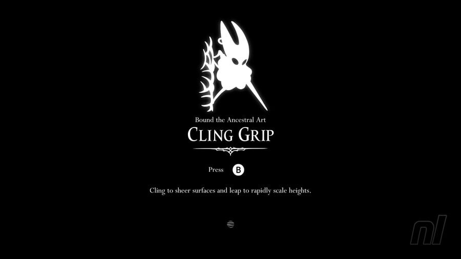

O salto duplo é uma habilidade que permite ao personagem principal de Hollow Knight realizar um segundo salto no ar, aumentando sua mobilidade e permitindo acessar áreas antes inacessíveis.
Essa habilidade é essencial para explorar o vasto mundo de Hallownest, permitindo que o jogador alcance plataformas mais altas, evite obstáculos e enfrente inimigos de maneira mais estratégica. O salto duplo é uma parte fundamental da mecânica de movimento do jogo, proporcionando uma experiência de exploração fluida e dinâmica.
É quase um complemento ao pulo duplo.
A habilidade de escalada é uma habilidade que permite ao personagem principal de Hollow Knight escalar paredes e superfícies verticais, aumentando ainda mais sua mobilidade e capacidade de exploração. Com essa habilidade, o jogador pode acessar áreas que antes eram inacessíveis, encontrar segredos escondidos e enfrentar desafios de maneira mais estratégica. A escalada é uma parte fundamental da mecânica de movimento do jogo, proporcionando uma experiência de exploração fluida e dinâmica em todo o reino de Hallownest.
